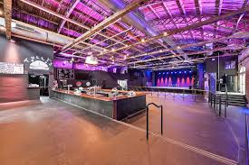
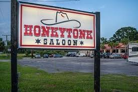

🍹 College Entertainment Weekends
Who says you need alcohol to enjoy Charleston's incredible party scene? Charleston has plenty of college-friendly hotspots and Instagram-worthy moments for every age.

🎉 No ID Required, All Fun Included!
This curated itinerary is built for the 18-20 crowd who want live music, the outdoors, and unforgettable memories — no bar required. Perfect for college weekends, birthdays, or just-because trips! Dont forget posh.vip has events for under 21 crowds as well!
This curated itinerary is built for the 18-20 crowd who want live music, the outdoors, and unforgettable memories — no bar required. Perfect for college weekends, birthdays, or just-because trips! Dont forget posh.vip has events for under 21 crowds as well!
College of Charleston Under 21 Bars
Music Farm

📍 32 Ann Street
Charleston's premier live music venue and the go-to option for the 18-20 crowd. Check the calendar for touring DJs, rock bands, hip-hop, and EDM acts. Tickets typically run $20-50.
18+ Shows AvailableHonky Tonk Saloon

📍 192 College Park Rd, Ladson
A line-dancing hangout just outside downtown — a great dance spot for the college crowd and young adults visiting Charleston. Check the calendar for DJs and line-dancing nights.
18+ Shows Available